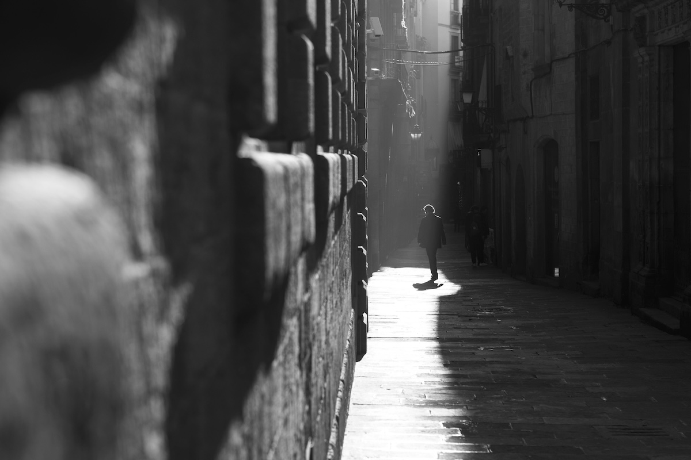

Gölge Kullanımı ile Derinlik ve Dramatik Etki Yaratma
Fotoğrafçılık yalnızca ışığın değil, aynı zamanda gölgelerin de sanatıdır. Gölge, bir kompozisyona derinlik, gizem, duygu ve hikâye katmanın güçlü yollarından biridir. Bu yazıda, gölgelerin doğru ve bilinçli kullanımıyla nasıl dramatik etkiler yaratabileceğinizi ve fotoğraflarınıza nasıl derinlik katabileceğinizi detaylı bir şekilde ele alacağız.
Gölgenin Temel Rolü: Işığın Ters Yüzü
Gölge, ışığın olmadığı yerde ortaya çıkar. Fotoğrafçılıkta gölgeyi sadece bir “karanlık alan” olarak görmek büyük bir eksikliktir. Aslında gölgeler, ışığın yönünü, şiddetini ve dokusunu anlatan ipuçlarıdır. Gölge sayesinde:
- Objelerin üç boyutlu algılanması sağlanır.
- Fotoğrafa dramatik bir atmosfer katılır.
- Duygusal yoğunluk artırılır.
- İzleyicinin dikkati belirli bir alana yönlendirilebilir.
Gölge ile Derinlik Yaratma
Derinlik, bir fotoğrafın iki boyutlu sınırlarını aşıp izleyicinin içine çekilmesini sağlar. Gölge ile derinlik yaratmanın yolları:
- Yanal Işık Kullanımı (Side Lighting): Yan taraftan gelen ışık, objelerin bir yüzünü aydınlatırken diğer yüzünde belirgin gölgeler oluşturur. Bu teknik özellikle portre ve still life (durağan nesne) çekimlerinde derinlik hissi verir.
- Yüksek Kontrastlı Gölge-Işık Geçişleri: Gölge ile ışık arasındaki sert geçişler, daha vurgulu bir derinlik algısı oluşturur. Özellikle tek ışık kaynağıyla çekimlerde bu etki çok başarılı sonuçlar doğurur.
- Çizgisel Gölge Kullanımı: Cam, perde ya da jaluzilerden süzülen ışığın oluşturduğu çizgisel gölgeler; perspektif algısı yaratır ve derinliği artırır.
Dramatik Etki İçin Gölgeyi Nasıl Kurgulamalı?
- Kontrastı Yükseltin: Gölge ile ışık arasındaki fark ne kadar yüksekse, fotoğraflarınız o kadar çarpıcı olur. “Low-key” fotoğraf tekniği bu mantıkla çalışır: Karanlık tonlar baskındır, ışık sadece belirli alanları vurgular.
- Negatif Alanı Kullanın: Gölgeyi sadece bir detay olarak değil, kompozisyonun ana öğesi olarak da kullanın. Negatif alanı gölgeyle doldurmak, minimal ve etkileyici bir ifade sunar.
- Hikâye Anlatımında Gölge: Gölgeler, anlatmak istediğiniz hikâyeyi güçlendirir. Örneğin bir portrede kişinin yüzünün yarısını gölgede bırakmak, iç dünyasına dair ipucu verir. Veya bir nesnenin gölgesi, görselde olmayan başka bir varlığı temsil edebilir.
Teknik İpuçları
- Işık Kaynağını Kontrol Edin: Gölgenin sert ya da yumuşak olması, ışığın doğrudanlığına bağlıdır. Güneş ışığı gibi sert kaynaklar daha belirgin gölgeler oluşturur. Difüz ışıkta gölgeler daha yumuşaktır.
- Pozlamaya Dikkat Edin: Gölge detaylarını kaybetmemek için pozlamayı gölgelerden değil, aydınlık alanlardan yapın. Alternatif olarak HDR (High Dynamic Range) çekim kullanabilirsiniz.
- Siyah-Beyaz Fotoğrafçılıkta Gölge: Gölge, siyah-beyaz fotoğraflarda çok daha etkili bir anlatım aracıdır. Renk dikkat dağıtıcı unsurları ortadan kaldırır, kontrast ve yapı ön plana çıkar.
İlham Veren Gölge Temelli Çekim Örnekleri
- Noir Tarzı Portreler: Tek ışık kaynağıyla yapılan dramatik portreler. Yüzün bir kısmı aydınlık, diğer kısmı karanlık.
- Sokak Fotoğrafçılığında Gölge Oyunu: Güneş ışığı ile binaların oluşturduğu keskin gölgeler, güçlü kompozisyonlar yaratır.
- Soyut Gölge Kompozisyonları: Gölgenin biçimsel özelliklerini kullanarak nesnenin değil, gölgesinin odakta olduğu deneysel çalışmalar.
Gölge ile Yaratıcı Denemeler
- Gölgeyi Nesne Olarak Kullanmak: Objeyi değil, objenin gölgesini kadrajlamak.
- Çift Anlamlı Gölge Kullanımı: Objeden bağımsız bir anlam taşıyan gölgeler. Örneğin bir çocuğun gölgesinde bir yetişkin silueti görmek gibi.
- Simetri ve Asimetri ile Oynamak: Gölgeleri denge veya dengeyi bozma aracı olarak kullanmak.
Sonuç
Gölge, fotoğrafçının en güçlü anlatım araçlarından biridir. Sadece ışığı değil, aynı zamanda karanlığı da görmeyi öğrendiğinizde, karelerinizde daha fazla derinlik, anlam ve duygusallık taşırsınız. Fotoğrafçılığınızda gölgeleri sadece kaçınılması gereken karanlık bölgeler olarak değil, bilinçli olarak şekillendirilmiş görsel dilin bir parçası olarak kullanın.
Deneyebileceğiniz 3 Alıştırma
- Tek Işıkla Portre Çekimi: Bir masa lambasıyla portre çekin, ışığı farklı açılardan deneyin.
- Gölgelerin Peşinden Gitmek: Gün batımı saatlerinde sokakları dolaşın, ilginç gölgeleri kadrajlayın.
- Siyah-Beyaz Gölgeler Serisi: Renkli değil, sadece siyah-beyaz gölge kompozisyonları üretin.